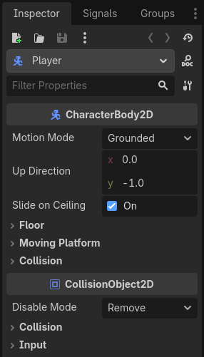
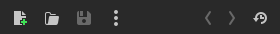

Inspector Dock
Inspector dock liệt kê mọi thuộc tính của một object, resource hoặc node. Nó sẽ cập nhật danh sách thuộc tính khi bạn chọn một node khác trong Scene Tree dock, hoặc khi bạn dùng lệnh Open từ menu ngữ cảnh của FileSystem.

Trang này giải thích chi tiết cách Inspector dock hoạt động. Bạn sẽ học cách sửa thuộc tính, thu gọn và mở rộng các vùng, dùng thanh tìm kiếm và nhiều thứ khác.
Cách dùng
Nếu Inspector dock đang hiển thị, nhấp vào một node trong cây scene sẽ tự động hiển thị các thuộc tính của nó. Nếu dock không hiển thị, bạn có thể mở nó bằng cách vào Editor > Editor Docks > Inspector.
Ở phía trên dock là các nút file và điều hướng.

Từ trái sang phải:
Mở một cửa sổ mới để chọn và tạo một resource trong bộ nhớ rồi chỉnh sửa nó.
Mở một resource từ FileSystem để chỉnh sửa.
Lưu resource đang được chỉnh sửa xuống đĩa.
Cung cấp các tùy chọn để:
Edit Resource from Clipboard bằng cách dán resource đã sao chép.
Copy Resource vào clipboard.
Show in FileSystem nếu resource đã được lưu.
Make Resource Built-In để làm việc với một resource tích hợp sẵn (built-in), thay vì resource từ đĩa.
Các mũi tên "<" và ">" cho phép bạn điều hướng qua lịch sử các object đã chỉnh sửa.
Nút bên cạnh chúng mở danh sách lịch sử để điều hướng nhanh hơn. Nếu bạn đã tạo nhiều resource trong bộ nhớ, bạn cũng sẽ thấy chúng ở đây.
Bên dưới, bạn sẽ thấy biểu tượng của node đang chọn, tên của nó và nút nhanh để mở tài liệu của nó ở phía bên phải. Nhấp vào chính tên node sẽ liệt kê các sub-resource của node này nếu có.
Tiếp theo là thanh tìm kiếm. Nhập bất kỳ thứ gì vào đó để lọc các thuộc tính được hiển thị. Xóa văn bản để bỏ tìm kiếm. Tìm kiếm này không phân biệt hoa thường và cũng tìm theo từng chữ cái khi bạn gõ. Ví dụ, nếu bạn gõ vsb, một trong các kết quả bạn thấy sẽ là thuộc tính Visibility vì thuộc tính này chứa tất cả các chữ cái đó.
Trước khi nói về nút công cụ cạnh thanh lọc, cần đề cập những gì bạn thực sự thấy bên dưới nó và cách chúng được tổ chức.

Các thuộc tính được nhóm bên trong lớp tương ứng của chúng thành các mục. Bạn có thể mở rộng từng mục để xem các thuộc tính liên quan.
Bạn cũng có thể mở tài liệu của từng lớp bằng cách nhấp chuột phải vào một lớp và chọn Open Documentation. Tương tự, bạn có thể nhấp chuột phải vào một thuộc tính để sao chép hoặc dán giá trị của nó, sao chép đường dẫn thuộc tính, đánh dấu yêu thích để nó hiển thị ở đầu inspector, hoặc mở trang tài liệu của nó.
Nếu bạn di chuột lên một thuộc tính, bạn sẽ thấy mô tả về chức năng của nó cũng như cách gọi nó trong script.
Bạn có thể thay đổi giá trị trực tiếp bằng cách nhấp, gõ hoặc chọn từ menu. Nếu thuộc tính là một số hoặc một thanh trượt, bạn có thể giữ nút chuột trái và kéo để thay đổi giá trị.

Nếu thuộc tính của một node là một sub-resource, bạn có thể nhấp vào mũi tên xuống để chọn loại resource, hoặc tải một resource bằng các tùy chọn Quick Load hoặc Load. Ngoài ra, một resource được hỗ trợ có thể được kéo từ FileSystem. Khi bạn bắt đầu kéo, thuộc tính tương thích sẽ được làm nổi bật. Chỉ cần thả nó vào giá trị của thuộc tính thích hợp.
Sau khi tải một sub-resource, bạn có thể nhấp vào nó để xem hoặc điều chỉnh các thuộc tính của nó.
Các giá trị khác với giá trị ban đầu sẽ có biểu tượng hoàn tác ( ). Nhấp vào biểu tượng này sẽ đưa giá trị về trạng thái ban đầu. Nếu các giá trị được liên kết với nhau, chúng sẽ có biểu tượng mắt xích và thay đổi một giá trị cũng sẽ thay đổi các giá trị khác. Bạn có thể bỏ liên kết bằng cách nhấp vào biểu tượng này.
). Nhấp vào biểu tượng này sẽ đưa giá trị về trạng thái ban đầu. Nếu các giá trị được liên kết với nhau, chúng sẽ có biểu tượng mắt xích và thay đổi một giá trị cũng sẽ thay đổi các giá trị khác. Bạn có thể bỏ liên kết bằng cách nhấp vào biểu tượng này.
Nếu bạn thay đổi một thuộc tính thường xuyên, hãy cân nhắc đánh dấu yêu thích nó bằng cách nhấp chuột phải và chọn Favorite Property. Thao tác này sẽ hiển thị nó ở đầu inspector cho mọi object của lớp này.
Giờ chúng ta đã hiểu rõ hơn các thuật ngữ, ta có thể tiếp tục với menu công cụ. Nếu bạn nhấp vào biểu tượng menu công cụ cạnh thanh lọc, một menu thả xuống sẽ cung cấp nhiều tùy chọn xem và chỉnh sửa.

Expand All: Mở rộng tất cả các mục, hiển thị mọi thuộc tính có sẵn.
Collapse All: Thu gọn tất cả các thuộc tính, chỉ hiển thị các lớp và các mục.
Expand Non-Default: Chỉ mở rộng các mục có giá trị ban đầu khác với giá trị hiện tại (các thuộc tính có biểu tượng hoàn tác (
)).Property Name Style: Mục này quyết định cách hiển thị tên thuộc tính trong inspector.
Rawdùng tên gốc của thuộc tính,Capitalizeddùng kiểu viết hoa tiêu đề bằng cách viết hoa chữ cái đầu của mỗi từ và bỏ dấu gạch dưới,Localizedhiển thị bản dịch của các thuộc tính nếu bạn đang dùng trình chỉnh sửa bằng ngôn ngữ khác tiếng Anh.Copy Properties: Sao chép mọi thuộc tính của node hiện tại cùng giá trị hiện tại của chúng.
Paste Properties: Dán các thuộc tính đã sao chép từ clipboard. Hữu ích để áp dụng các thuộc tính chung của một node cho node khác.
Make Sub-Resources Unique: Theo mặc định, một node được nhân bản sẽ dùng chung các sub-resource của node gốc. Thay đổi một tham số của sub-resource ở một node sẽ ảnh hưởng đến node kia. Nhấp vào tùy chọn này sẽ làm cho mỗi sub-resource dùng trong node này trở thành duy nhất, tách biệt khỏi các node khác.
Mẹo
Nếu một node có các biến được export trong script gắn với nó, bạn cũng sẽ thấy chúng trong inspector. Hình ảnh đầu tiên trong phần này có một biến như vậy cho node Player: Action Suffix. Xem Thuộc tính export trong GDScript để biết thêm về chủ đề này.
Xem thêm
Tham khảo Tùy chỉnh giao diện để biết các tùy chọn tùy biến dock.